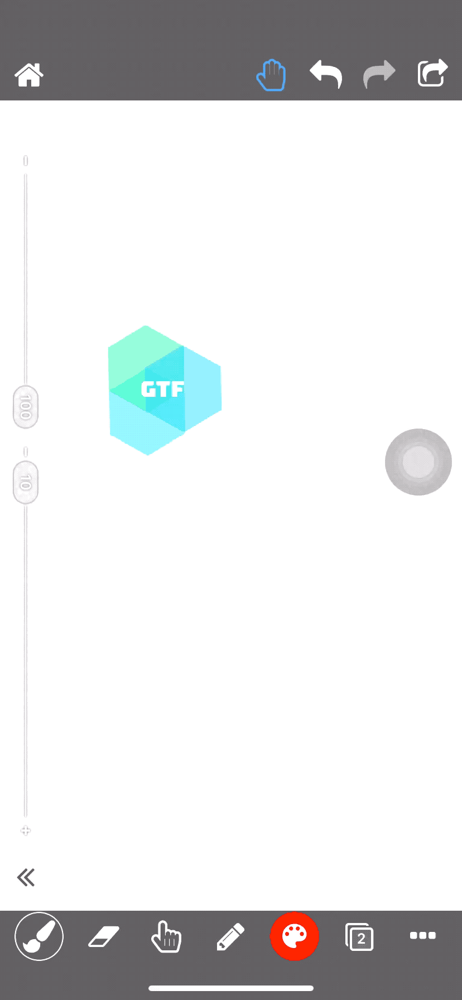
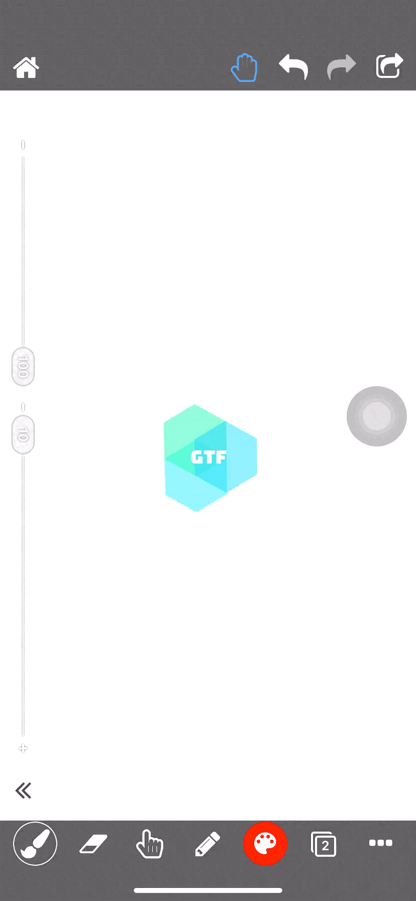

iOS WDA手势模拟解析
正在参与的机架平台iOS端远程操作是基于WebDriverAgent(简称WDA)实现。
WDA是Facebook出品的的iOS自动化测试框架，可惜原项目已经2019年7月停止维护。不过好在Appium社区维护的一个开源版本依然保持活跃, 解决了例如Xcode11.4兼容性等问题。
后续提到的WDA均指的Appium版本
WDA的工作原理简单来说，就是在iOS端实现了一个WebDriver Server，通过一组REST API暴露iOS私有API的能力，其中最重要的是模拟手势操作。
一、WDA手势操作
WDA默认的单指手势操作是基于XCUICoordinate实现，其提供了一组接口
1
2
3
4
5
6
7
8
9
10
11
| // 单击
- (void)tap;
// 双击
- (void)doubleTap;
// 按压并保持
- (void)pressForDuration:(NSTimeInterval)duration;
// 按压并保持，再拖动到新的位置
- (void)pressForDuration:(NSTimeInterval)duration thenDragToCoordinate:(XCUICoordinate *)otherCoordinate;
|
在GTF的实践中，发现手势操时延非常严重。其根本原因在于XCUICoordinate是基于UI控件的：
A coordinate represents a location on screen, relative to some element
所以在构造XCUICoordinate时，必须要进行UI控件的查询：
1
2
3
4
5
6
7
8
9
10
11
12
13
14
15
16
| XCUIElement *element = application;
if (isSDKVersionGreaterThanOrEqualTo(@"11.0")) {
//
// 查询到第一个控件
//
XCUIElement *window = application.windows.fb_firstMatch;
//
// 将绝对坐标转换为控件相对坐标
//
if (window) {
element = window;
point.x -= element.frame.origin.x;
point.y -= element.frame.origin.y;
}
}
|
在远程控制场景中，用户在前端用鼠标模拟手势操作，只需要基于手机屏幕进行绝对坐标操作即可，完全可以跳过UI控件查找步骤。
通过分析WDA源码可以发现，WDA还默默基于XCTest私有API，提供了一个适用于多指操作的接口。
私有API是基于屏幕绝对坐标进行手势的定义与回放，脱离了控件查询依赖，完全能满足机架的需求。
二、XCTest私有API
对于用户而言，手势操作即在屏幕上用一或多根手指进行如下连续操作：
Touch Down：按压在屏幕上特定位置Move To：移动到新的位置Wait：保持Touch Up：抬起，即手势结束
对于WDA而言，为了模拟用户手势操作，即触发一或多组上述动作序列。
1. 单点操作轨迹
一个手势可能包含多根手指，每根手指的操作即一个单点操作轨迹。 XCTest中一个单点的操作轨迹都保存在XCPointerEventPath。
一个常见的单点操作轨迹如下，虽然中间移动过程可能不同，但是必然是以按压开始，以抬起结束：
1
2
3
4
5
6
7
8
9
10
| graph LR
TouchDown(Touch Down 按压)
MoveTo[Move To 移动]
Wait[Wait 等待]
TouchUp(Touch Up 抬起)
TouchDown --> MoveTo
MoveTo -.-> Wait
Wait -.-> MoveTo
Wait --> TouchUp
|
如果是希望构造一个单点矩形移动轨迹，则对应到XCPointerEventPath即为:
1
2
3
4
5
6
7
8
9
10
11
12
13
14
15
16
17
18
19
20
21
22
23
24
25
26
27
28
29
30
31
32
33
34
35
| //
// 1. 以一个Touch Down事件初始化一个实例
// @param arg1 初始按压位置的坐标
// @param arg2 该事件在时间轴上的偏移量，单位：秒
//
XCPointerEventPath *eventPath = [[XCPointerEventPath alloc] initForTouchAtPoint:CGPointMake(200, 200) offset:0];
//
// 2. 添加Move To事件
// @param arg1 移动的目标位置坐标
// @param arg2 该事件在时间轴上的偏移量，单位：秒
//
[eventPath moveToPoint:CGPointMake(200, 300) atOffset:1];
[eventPath moveToPoint:CGPointMake(300, 300) atOffset:2];
//
// 3. 添加Wait事件
// 其实是根据其它事件的时间偏移(offset)，并插入一个按压时间来控制
// @param arg1 该事件在时间轴上的偏移量，单位：秒
//
[eventPath pressDownAtOffset:3];
//
// 4. 继续添加Move To事件
// @param arg1 移动的目标位置坐标
// @param arg2 该事件在时间轴上的偏移量，单位：秒
//
[eventPath moveToPoint:CGPointMake(300, 200) atOffset:4];
[eventPath moveToPoint:CGPointMake(200, 200) atOffset:5];
//
// 5. 添加Touch Up事件
// @param arg1 该事件在时间轴上的偏移量，单位：秒
//
[eventPath liftUpAtOffset:5];
|
需要注意的是：offset指的是绝对时间偏差，例如上面示例中移动的4个点，其实是匀速的，每次移动耗时1秒
最终的效果为：

2. 完整手势记录
每个手指的操作即为一次单点移动轨迹, 而一次手势操作可能包含多个手指，例如：双指缩放操作。
完整的手势操作记录保存在XCSynthesizedEventRecord，其中可以包含多个XCPointerEventPath。以双指捏合进行缩放为例，对应的代码为：
1
2
3
4
5
6
7
8
9
10
11
12
13
14
15
16
17
18
19
20
21
22
23
24
25
26
27
28
| //
// 1. 构造一个手势记录
// @param 自定义名称
// @param 当前屏幕旋转方向
//
XCSynthesizedEventRecord *eventRecord = [[XCSynthesizedEventRecord alloc] initWithName:@"Test" interfaceOrientation:UIInterfaceOrientationPortrait]];
//
// 2. 对于一根手指，构造一个单点移动轨迹
//
XCPointerEventPath *eventPath1 = [[XCPointerEventPath alloc] initForTouchAtPoint:CGPointMake(180, 448) offset:0];
[eventPath1 moveToPoint:CGPointMake(130, 448) atOffset:1];
[eventPath1 moveToPoint:CGPointMake(180, 448) atOffset:3];
[eventPath1 liftUpAtOffset:3];
//
// 3. 对于一根手指，构造一个单点移动轨迹
//
XCPointerEventPath *eventPath2 = [[XCPointerEventPath alloc] initForTouchAtPoint:CGPointMake(220, 448) offset:0];
[eventPath2 moveToPoint:CGPointMake(270, 448) atOffset:1];
[eventPath2 moveToPoint:CGPointMake(220, 448) atOffset:3];
[eventPath2 liftUpAtOffset:3];
//
// 4. 将所有的单点操作添加至手势记录中
//
[eventRecord addPointerEventPath:eventPath1];
[eventRecord addPointerEventPath:eventPath2];
|
最终的效果为：

3. 手势操作回放
创建一个XCSynthesizedEventRecord用来描述手势操作之后，则需要通过XCUIDevice私有接口进行合成并回放在设备上:
1
2
3
4
5
6
7
| //
// 1. 合成已经定义好的手势操作
// @param 录制好的手势操作，即eventRecord
// @param 执行完成后的回调
//
[[XCUIDevice.sharedDevice eventSynthesizer] synthesizeEvent:eventRecord completion:(id)^(BOOL result, NSError *invokeError){
}];
|
三、总结
最终基于XCTest私有API封装了适用于远程控制场景的UI操作接口，提升操作响应速度，欢迎各位用户体验。
同时基于私有API的连续手势、多指操作模拟也在实现中，敬请期待。